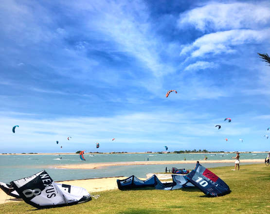

Transfer
O aeroporto mais próximo da Ilha do Guajirú é em Fortaleza, com aprox. 230 km ao sul e levará cerca de 2,30 horas de táxi.
O novo aeroporto internacional em Cruz, que é de aprox. 30 minutos. A partir da Ilha do Guajiru, a inauguração será em breve e oferecerá vôos internacionais.
Para chegar até nós a partir do aeroporto de Fortaleza você tem a escolha entre o ônibus, um carro alugado ou uma transferência de táxi.
De Fortaleza de carro alugado:
A estrada do aeroporto de Fortaleza para a Ilha do Guajirú é quase nova e a distância é de aprox. 230 km. Basta seguir o CE085 e passar por Pecém, Taiba, Paracuru, Lagoinha, Flexeiras até Itarema. Em Itarema basta seguir as placas da praia ("Praia" = Praia). A taxa diária para um carro econômico é de aprox. 35 EUR Nós podemos organizar o carro alugado para você que você pode assumir no escritório de aluguer de automóveis diretamente no aeroporto.
De Fortaleza de ônibus:
A maneira mais econômica de chegar à Ilha do Guajirú é pela empresa de ônibus Fretcar. É um grande ônibus com assentos confortáveis e ar condicionado. O ônibus transporta kite-bagagem gratuitamente. Está saindo do aeroporto cerca de 5 vezes por dia para Jijoca (Jericoacoara) e está passando por Itarema. O ônibus irá parar em Itarema, a 6 km da Ilha do Guajiru. Na estação de ônibus você encontrará um táxi que pode levá-lo para a Ilha do Guajiru.
Recomendação: É melhor levar roupas quentes, pois o ônibus pode estar muito frio, às vezes.
De Fortaleza por transferência privada ou táxi:
A maneira mais confortável é uma transferência privada ou um táxi. Os preços indicados são por carro para até 4 pessoas. A opção mais barata é um carro normal, no qual a bagagem de pipa é transportada no telhado. O preço mais alto é para uma picape 4x4 Hilux. Nós também organizamos viagens para mais pessoas.
Por favor, sinta-se livre para reservar o seu transfer privado connosco.
Ilha do Guajirú = IdG
Brazilian Real = BRL
Fortaleza aerop. - IdG: 400 BRL | 450 BRL
Jericoacoara - IdG: 300 BRL | 320 BRL
Jijoca aerop. - IdG: 200 BRL | 230 BRL
Cumbuco - IdG: 350 BRL | 400 BRL
Taiba - IdG: 320 BRL | 350 BRL
Paracuru - IdG: 280 BRL | 350 BRL
Lagoinha - IdG: 250 BRL |
Icaraizinho - IdG: 220 BRL |
Preá - IdG: 230 BRL | 280 BRL
Barra Grande - IdG: 420 BRL | 470 BRL
Macapa - IdG: 450 BRL | 500 BRL
Jeri. - Fortaleza: 600 BRL |
Lençois Maranhenses - IdG: | 1200 BRL
Transfer de Cumbuco para Ilha do Guajiru
Na alta temporada também há uma vez por dia uma conexão de ônibus entre Cumbuco e Jericoacoara. O ônibus irá parar em Itarema de onde você pode facilmente chegar à Ilha do Guajiru.
Para a tabela de tempo real, por favor envie-nos um email.
Você pode reservar esta transferência através de nós com pelo menos um dia de antecedência.
Se você tiver dúvidas, não hesite em nos contatar via e-mail: info@coco-knots.com


